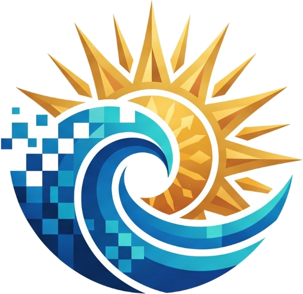
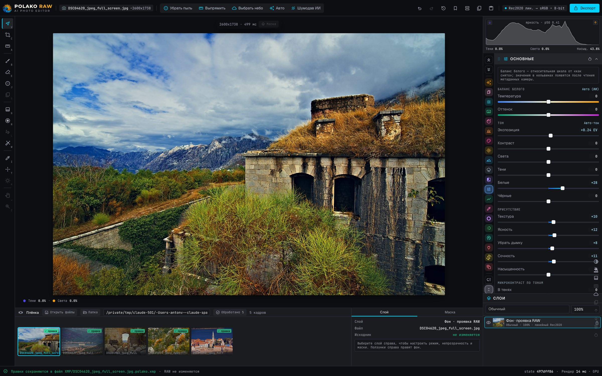
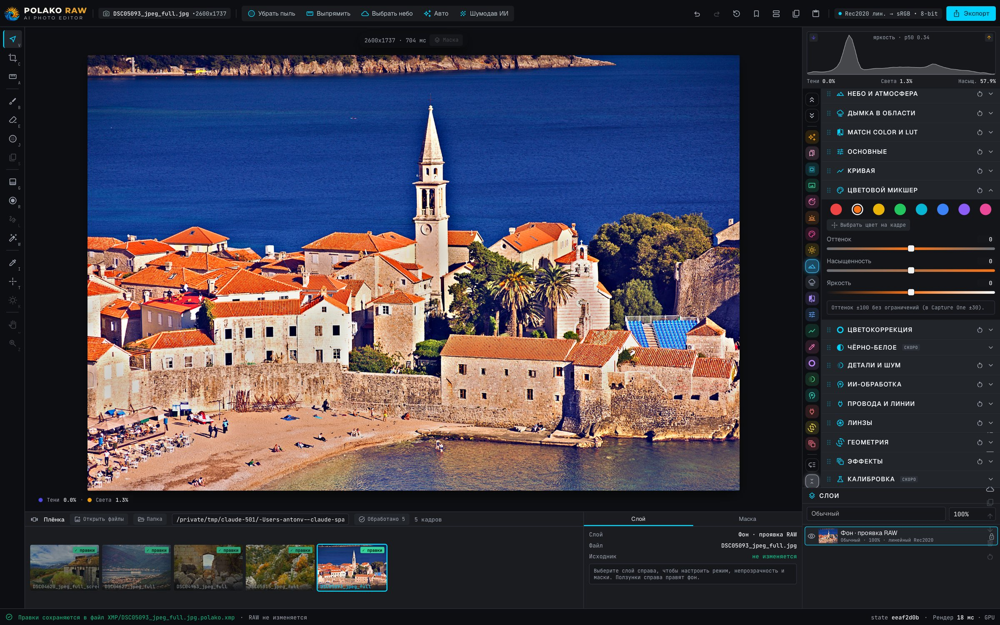
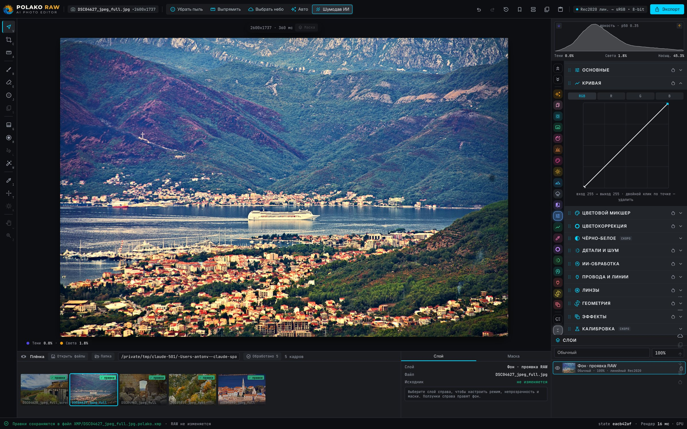
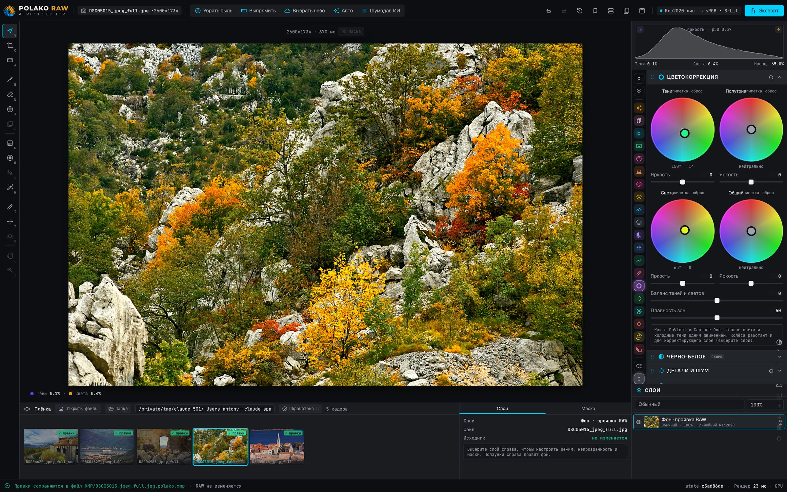
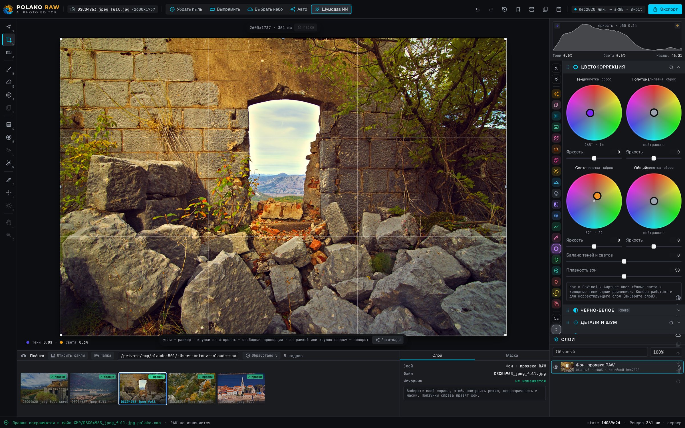
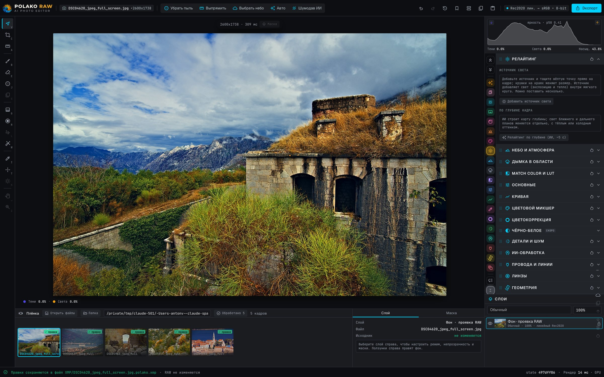

AI photo editor · macOS · Apple SiliconPOLAKO RAW
Локальный RAW-редактор для пейзажных фотографов. Проявка на GPU в реальном времени, нейросети сами выделяют небо, чистят пыль и шум — а исходный файл остаётся нетронутым.
Интерфейс вживую

Проявка — основные
Температура, оттенок, экспозиция, контраст, света, тени, белые и чёрные, текстура, чёткость и дымка. Гистограмма с клиппингом, живое превью на GPU.

Цветовой микшер и пипетка
Восемь цветовых каналов: оттенок, насыщенность, яркость. Нажмите на цвет в кадре и потяните — нужный канал выберется сам.

Кривая и ИИ-шумодав
Кривые по каналам с точками, а нейросетевой шумодав (NAFNet) — в одну кнопку на панели.

Цветокоррекция: тени, полутона, света
Цветовые колёса для теней, полутонов, светов и общего тона, баланс и плавность — кинематографичный цвет прямо в осеннем лесу.

Кадрирование, горизонт, авто-кадр
Свободная или с фиксированной пропорцией рамка прямо на кадре, линия по горизонту и подсказки ИИ, которые ставят объект на линии третей.

Релайтинг по глубине, небо и атмосфера
Отдельная подсветка ближнего и дальнего плана по карте глубины, источники света на кадре, замена и усиление неба.
Всё, что нужно пейзажу
Исходный RAW не изменяется
Все правки лежат в XMP-файле рядом со снимком и сохраняются автоматически. Отмена, история и журнал правок всегда под рукой.
Нейромаски SAM 2
Один клик выделяет небо, объект, воду или зелень и создаёт слой с собственными поправками.
ИИ-шумодав
Чистка высоких ISO на базе NAFNet, которая сохраняет текстуру, а не размазывает её.
Удаление пыли
Инпейнтинг LaMa находит и убирает пятна на матрице за один проход.
Релайтинг по глубине
Ближний и дальний планы подсвечиваются отдельно, тёплым или холодным оттенком, по карте глубины ИИ.
Авто с распознаванием сцены
Определяет закат, море, лес, снег, архитектуру и другое, и собирает под сцену проявку.
Слои, градиенты и кисти
Линейные, радиальные и фигурные градиенты с ручками прямо на кадре, кисть, маски по яркости, режимы наложения и прозрачность каждого слоя.
До / после
Переключатель, шторка или рядом — режимы листаются одной клавишей.
Копирование установок
Копируйте все правки с одного кадра и вставляйте на другой по группам — одним отменяемым шагом.
Пресеты XMP и Lightroom
Свои looks сохраняются как .xmp, а пресеты Lightroom / Camera Raw загружаются: тон, HSL, цветокоррекция, кривые.
Провода, линзы, микроконтраст
Удаление проводов и линий, коррекция линз, микроконтраст в тенях, полутонах и светах.
Быстро там, где важно
Декодирование RAW
Ядро Darktable декодирует RAW в линейный Rec.2020.
Проявка на GPU
Ползунки считаются в WebGL: ~5–30 мс на кадр.
Нейрослой
SAM 2, NAFNet, LaMa и глубина работают на Apple Silicon (MPS).
Эталонный рендер
Серверный рендер — эталон; GPU-превью совпадает с ним в пределах ~0,2 уровня.
Экспорт
sRGB 8-bit из линейного конвейера Rec.2020.